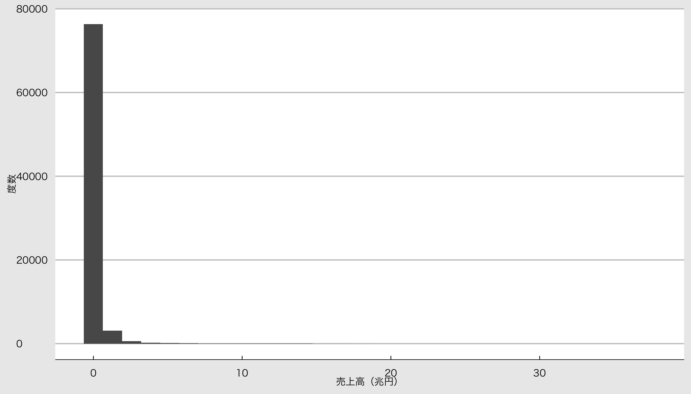
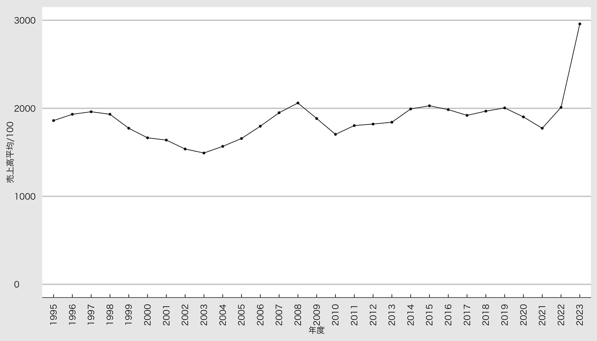
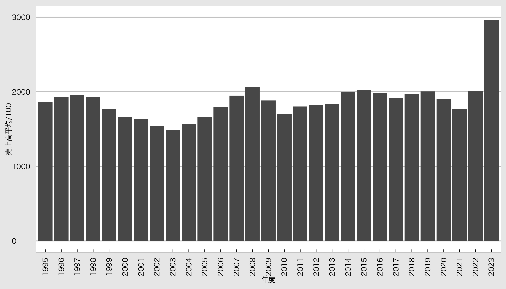
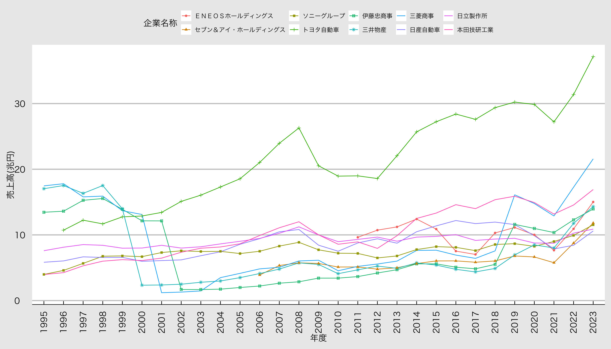
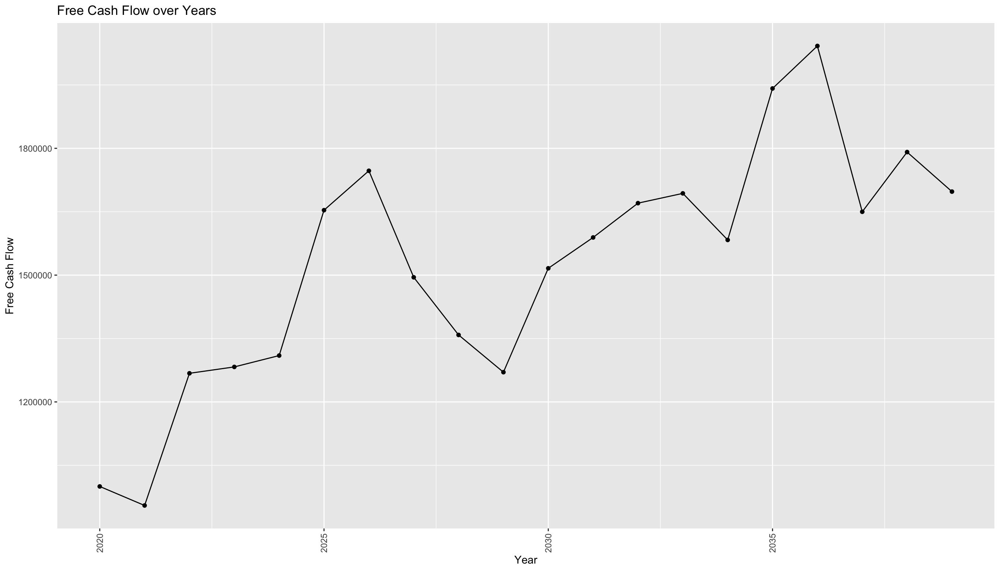

pacman::p_load(
tidyverse, # データ操作全般
ggthemes, # グラフのスタイル拡張
knitr, # 表を作る
kableExtra # 表を作る
)補講 : 収益データを可視化
会計・財務 2024
準備
パッケージ
必要なパッケージを読み込むために、pacmanパッケージを使います。 tidyverseとグラフの見た目を変えるggthemesとキレイな表を作るknitrとkableExtraを読み込みます。
作業ディレクトリの場所
まずは作業ディレクトリの場所にファイルがあることを確認しましょう。 いまRが使っている作業ディレクトリの場所はgetwd()で確認できます。
getwd()[1] "/Users/soichi/Library/CloudStorage/Dropbox/R/presemi"データの読み込み
ここでは、作業ディレクトリの中にdataというフォルダがあり、 その中にotomasa04.csvを保存してある、という前提で話を進めます。
df <- read_csv("data/otomasa_04.csv")これで財務データが入ったデータフレームdfができました。
グラフのスタイルを保存
mystyleというオブジェクトに保存しておく。 listで設定をまとめる。
mystyle <- list( # mystyleとして設定を保存
theme_economist_white(), # ggthemesが必要
theme(text = element_text(
size = 14, # フォントサイズ
family = "HiraKakuProN-W3" # mac用フォント
)))Windowsの人は family = “HiraKakuProN-W3” は消してください。
データの確認
データの中身を確認するならglimpse()を使うと便利です。
glimpse(df)Rows: 83,637
Columns: 35
$ 日経会社コード <chr> "0000001", "0000001", "0000001", "000…
$ 企業名称 <chr> "極洋", "極洋", "極洋", "極洋", "極洋…
$ 決算期 <chr> "1995/03", "1996/03", "1997/03", "199…
$ 決算種別 <dbl> 10, 10, 10, 10, 10, 10, 10, 10, 10, 1…
$ 連結基準 <dbl> 1, 1, 1, 1, 1, 1, 1, 1, 1, 1, 1, 1, 1…
$ 決算月数 <dbl> 12, 12, 12, 12, 12, 12, 12, 12, 12, 1…
$ 日経業種コード <dbl> 235341, 235341, 235341, 235341, 23534…
$ 売上高 <dbl> 173803, 175202, 183640, 176022, 17194…
$ 特別利益 <dbl> 778, 903, 186, 287, 79, 1429, 282, NA…
$ 特別損失 <dbl> 778, 708, 783, 852, 1271, 2936, 478, …
$ 売上総利益 <dbl> 14314, 12327, 14222, 14225, 15206, 15…
$ 営業利益 <dbl> 1059, -148, 1362, 739, 2069, 2842, 23…
$ 経常利益 <dbl> 1049, -82, 1058, 535, 1600, 2299, 194…
$ 当期純利益 <dbl> NA, NA, NA, NA, NA, NA, NA, NA, NA, N…
$ 親会社株主当期純利益 <dbl> 797, -64, 236, -377, -251, 327, 927, …
$ `支払利息・割引料` <dbl> 1394, 1011, 830, 884, 736, 683, 661, …
$ `法人税・住民税及び事業税合計` <dbl> 271, 159, 213, 341, 620, 606, 908, 85…
$ 法人税等調整額 <dbl> NA, NA, NA, NA, NA, -178, -114, 44, -…
$ 減価償却費 <dbl> NA, NA, NA, 42, 34, 84, 92, 85, 81, 8…
$ のれん償却額 <dbl> NA, NA, NA, NA, NA, NA, NA, 1, NA, NA…
$ `受取利息・配当金` <dbl> 317, 219, 169, 195, 187, 145, 131, 97…
$ 持分法を適用した場合の投資損益 <dbl> NA, NA, NA, NA, NA, NA, NA, NA, NA, N…
$ 支払利息 <dbl> NA, NA, NA, NA, NA, 683, 661, 536, 50…
$ 税金等調整前当期純利益 <dbl> 1049, 112, 461, -29, 408, 791, 1750, …
$ 税金等調整前当期利益 <dbl> 1049, 112, 461, -29, 408, 791, 1750, …
$ 販売費及び一般管理費 <dbl> 13254, 12476, 12859, 13486, 13136, 12…
$ 売上原価 <dbl> 159489, 162875, 169418, 161796, 15673…
$ 資産合計 <dbl> 61692, 63287, 65883, 62766, 62109, 60…
$ `受取利息・割引料・有価証券利息` <dbl> 134, 68, 49, 69, 72, 59, 47, 59, 30, …
$ `短期借入金・社債合計` <dbl> 29693, 29887, 33371, 30942, 30937, 27…
$ `長期借入金・社債・転換社債` <dbl> 5543, 5020, 5635, 5080, 4798, 5816, 4…
$ `1年内返済の長期借入金` <dbl> NA, NA, NA, NA, NA, 1109, 1267, 1449,…
$ コマーシャルペーパー <dbl> NA, NA, NA, NA, NA, NA, NA, NA, NA, N…
$ リース債務 <dbl> NA, NA, NA, NA, NA, NA, NA, NA, NA, N…
$ 長期リース債務 <dbl> NA, NA, NA, NA, NA, NA, NA, NA, NA, N…カテゴリー変数
データフレームdfの中には、文字列(character)として、
- 日経会社コード
- 企業名称
- 決算期
が入っているので、適切な型に変換する。
ファクター型に変換
文字列をファクター型に変換するにはas.factor()を使う。 決算期から年度データを取り出すためにsubstr()を使う。 substr()は文字列の一部を取り出す関数である。
欠損値の処理
オリジナルの財務データの値が欠損値の場合、それは財務諸表上に個別項目で載せられないほど額が小さいことを意味する。 そこで、欠損値にゼロを代入する。
df[is.na(df)] <- 0is.na()は欠損値をTRUE、欠損値でない値をFALSEとして返す関数で、TRUEにゼロを代入している。
異常な観測値の処理
決算期を変更した会社を除外するため，決算月数が12の会社のみを抽出する。 ついでに売上高が1億円未満の企業や販管費がゼロの会社も除外する。
df <- df |>
filter(
決算月数 == 12, # 決算月数が12の会社
売上高 >= 100, # 売上高1億以上
販売費及び一般管理費 > 0) # 販管費が0超確認
df |>
select(企業名称, 決算期, 決算月数, 売上高, 販売費及び一般管理費) |>
head(10) |>
kable(format = "html", booktabs = TRUE) |>
kable_styling(font_size = 20)| 企業名称 | 決算期 | 決算月数 | 売上高 | 販売費及び一般管理費 |
|---|---|---|---|---|
| 極洋 | 1995/03 | 12 | 173803 | 13254 |
| 極洋 | 1996/03 | 12 | 175202 | 12476 |
| 極洋 | 1997/03 | 12 | 183640 | 12859 |
| 極洋 | 1998/03 | 12 | 176022 | 13486 |
| 極洋 | 1999/03 | 12 | 171944 | 13136 |
| 極洋 | 2000/03 | 12 | 171031 | 12946 |
| 極洋 | 2001/03 | 12 | 166644 | 13117 |
| 極洋 | 2002/03 | 12 | 158006 | 13377 |
| 極洋 | 2003/03 | 12 | 162773 | 13716 |
| 極洋 | 2004/03 | 12 | 151534 | 13499 |
変な企業を除外
諸事情により同じ年度に2つデータがある会社があるので、除外する。
df <- df |>
group_by(年度, 企業名称) |> # 年度と企業ごとに
mutate(N = n()) |> # なぜか同じ年度に2コ以上データがある会社があるのでカウント
filter(N != 2) |> # 重複データを削除
select(-N) # 上で作ったけどもういらないのでNを削除これで整然データ(tidy data)が完成した(はず)。
可視化
売上高のヒストグラム
簡単にチェックするだけなら基本関数hist()
Rコードはここ
hist(df$売上高)
売上高のヒストグラム
キレイなグラフを作るならggplot2
Rコードはここ
df |>
ggplot() + aes(x = 売上高/1000000) + # 売上高を100万で割って単位を兆
geom_histogram() + # ヒストグラム
xlab("売上高（兆円）") + ylab("度数") + # x軸のラベル
mystyle # 上で作ったスタイルを適用
分布の計上を確認
分布が左に固まっており、ばらつきが分からないので、分位点を確認
- 最小 1億円
- Q1 135億3750万円,
- Q3 941億6700万円
- 最大 37兆1542億9800万円
- 中央値 278億8450万円
- 平均 1879億8710万円
異常値の影響
売上高の最大値が大きすぎる。 売上高の分布を正規分布に近づけるために対数を取る。

対数をとって散布図を書く
ggplot2パッケージのgeom_point()を使って、売上高と販売費及び一般管理費の散布図を書いてみる。
年度別の売上高平均を計算
Rコードはここ
# 年度別の売上高平均を計算
df_year_sale <- df |>
group_by(年度) |>
summarise(
売上高平均 = mean(売上高) # 平均売上高を計算
)
# 折れ線グラフ
df_year_sale |>
# 年度がファクターなので、group = 1として1つのグループにまとめる
ggplot() + aes(x = 年度, y = 売上高平均 / 100, group = 1) +
geom_line() + geom_point() +# ヒストグラム
ylim(0, 3000) +
mystyle + # 軸の範囲とスタイルを適用
theme(axis.text.x = element_text(angle = 90, hjust = 1, vjust = 0.5)) # X軸のラベルを90度回転
年度別の売上高平均棒グラフ
横軸が年度なので，棒グラフもOK
Rコードはここ
df_year_sale |>
# 売上高平均を100で割って単位を億に
ggplot() + aes(x = 年度, y = 売上高平均 / 100) +
geom_col() +# ヒストグラム
ylim(0, 3000) + mystyle + # Y軸の範囲とスタイル
theme(axis.text.x = element_text(angle = 90, hjust = 1, vjust = 0.5)) # X軸のラベルを90度回転
グラフの読み取り
- なんか2023年度の売上が以上に増加している
- 2023年度に売上高が急増した企業があるのかもしれない
- 2023年度売上高ランク上位10社の2022年度と2023年度の売上高を比較しなきゃ
年度別の売上高平均を計算
Rコードはここ
df |>
select(年度, 企業名称, 売上高) |> # 必要な変数を選択
mutate(売上高 = round(売上高 / 100)) |> # 売上高を100で割って単位を億円に
filter(年度 %in% c("2022", "2023")) |> # 2022年と2023年のデータのみを抽出
pivot_wider(names_from = 年度, values_from = 売上高, names_prefix = "年度") |># 年度を横軸に
mutate(# 売上の増加額と増加率を計算
差額 = 年度2023 - 年度2022, # 変化額
変化率 = 1 + round(差額 / 年度2022, digits = 2) # 変化率
) |>
arrange(desc(年度2023)) |> # 2023年度の売上高で降順に並び替え
head(10) |> # 上位10社のみを抽出
kable(format = "html", booktabs = TRUE) |>
kable_styling(font_size = 20) # 作表| 企業名称 | 年度2022 | 年度2023 | 差額 | 変化率 |
|---|---|---|---|---|
| トヨタ自動車 | 313795 | 371543 | 57748 | 1.18 |
| 三菱商事 | 172648 | 215720 | 43072 | 1.25 |
| 本田技研工業 | 145527 | 169077 | 23550 | 1.16 |
| ＥＮＥＯＳホールディングス | 109218 | 150166 | 40948 | 1.37 |
| 三井物産 | 117576 | 143064 | 25488 | 1.22 |
| 伊藤忠商事 | 122933 | 139456 | 16523 | 1.13 |
| セブン＆アイ・ホールディングス | 87498 | 118113 | 30615 | 1.35 |
| ソニーグループ | 99215 | 115398 | 16183 | 1.16 |
| 日立製作所 | 102646 | 108812 | 6166 | 1.06 |
| 日産自動車 | 84246 | 105967 | 21721 | 1.26 |
特殊な3時点比較
リーマンショック2009年、コロナ禍2021年、2023年の売上高を比較する
Rコードはここ
df |>
select(年度, 企業名称, 売上高) |> # 必要な変数を選択
mutate(売上高 = round(売上高 / 100)) |> # 売上高を100で割って単位を億円に
filter(年度 %in% c("2009", "2021", "2023")) |> # 2000年と2010年と2023年のデータのみを抽出
pivot_wider(names_from = 年度, values_from = 売上高, names_prefix = "年度") |># 年度を横軸に
mutate(# 売上の増加額と増加率を計算
差額 = 年度2023 - 年度2021, # 変化額
変化率 = round(差額 / 年度2021, digits = 2) # 変化率
) |>
arrange(desc(年度2023)) |> # 2023年度の売上高で降順に並び替え
head(10) |> # 上位10社のみを抽出
kable(format = "html", booktabs = TRUE) |>
kable_styling(font_size = 20) # 作表| 企業名称 | 年度2009 | 年度2021 | 年度2023 | 差額 | 変化率 |
|---|---|---|---|---|---|
| トヨタ自動車 | 205296 | 272146 | 371543 | 99397 | 0.37 |
| 三菱商事 | 61464 | 128845 | 215720 | 86875 | 0.67 |
| 本田技研工業 | 100112 | 131705 | 169077 | 37372 | 0.28 |
| ＥＮＥＯＳホールディングス | NA | 76580 | 150166 | 73586 | 0.96 |
| 三井物産 | 55048 | 80102 | 143064 | 62962 | 0.79 |
| 伊藤忠商事 | 34191 | 103626 | 139456 | 35830 | 0.35 |
| セブン＆アイ・ホールディングス | 56499 | 57667 | 118113 | 60446 | 1.05 |
| ソニーグループ | 77300 | 89987 | 115398 | 25411 | 0.28 |
| 日立製作所 | 100004 | 87292 | 108812 | 21520 | 0.25 |
| 日産自動車 | 84370 | 78626 | 105967 | 27341 | 0.35 |
10兆円売上高企業
2023年度の売上高が10兆円以上の会社の売上高の推移
Rコードはここ
# 2023年度に10兆円売上高企業の企業名を取得
df_name <- df |>
filter(売上高 >= 10^7 & 年度 == 2023)
name <- df_name$企業名称
# 10兆円企業の売上高推移
g <- df |>
filter(企業名称 %in% name) |> # 企業名がnameに含まれるものを抽出
ggplot() + aes(x = 年度, y = 売上高 / 10^6, group = 企業名称, color = 企業名称,shape = 企業名称) + # 企業ごとに色分け
geom_line() + geom_point() + # 折れ線グラフと散布図を組み合わせる
xlab("年度") + ylab("売上高(兆円)") + mystyle + # スタイルを適用
theme(
axis.text.x = element_text(angle = 90, hjust = 1, vjust = 0.5),
legend.text = element_text(size = 10) # フォントサイズを指定
)
print(g) # 出力
企業価値評価
DCFの計算
サンプルデータの生成を行います。 ここでは過去5年間のFCFを次のように設定します。
set.seed(123) # 再現性のためのシード設定
years <- 20 # 推定期間
initial_fcf <- 1e6 # 初年度のFCF
mean_growth <- 1e3 # 平均成長量
sd_growth <- 2e5 # 成長量の標準偏差FCFの生成
正規分布からランダムな増加量を生成し、右肩上がりのFCFを作成
growth_rates <- rnorm(years, mean = mean_growth, sd = sd_growth)
fcf <- data.frame(
Year = seq(from = 2020, by = 1, length.out = years),
FCF = cumsum(c(initial_fcf, growth_rates[-1]))
)FCFのグラフ
生成したFCFのグラフを描画
ggplot(fcf, aes(x = Year, y = FCF)) +
geom_line() +
geom_point() +
ggtitle("Free Cash Flow over Years") +
xlab("Year") +
ylab("Free Cash Flow") +
theme(axis.text.x = element_text(angle = 90, hjust = 1, vjust = 0.5))
企業価値評価の設定
WACC、成長率の設定
# 加重平均資本コストの設定
wacc <- 0.05
# 永続成長率の設定（0%と仮定）
g <- 0.00企業価値評価
企業価値評価（DCF法）の計算を関数化する。
calculate_dcf <- function(fcf, wacc, g) {
# 年度順に並べる
fcf <- fcf %>% arrange(Year)
# 最終年度のFCFを取得
last_fcf <- tail(fcf$FCF, n = 1)
# ターミナルバリューの計算
terminal_value <- last_fcf / (wacc - g)
# 割引キャッシュフローの計算
fcf$DiscountedFCF <- fcf$FCF / (1 + wacc)^(fcf$Year - min(fcf$Year) + 1)
# ターミナルバリューの割引現在価値
terminal_value_discounted <- terminal_value / (1 + wacc)^years
# 企業価値の計算
enterprise_value <- sum(fcf$DiscountedFCF) + terminal_value_discounted
return(enterprise_value)
}企業価値の計算
上で作成した関数を用いて、企業価値を計算します。
enterprise_value <- calculate_dcf(fcf, wacc, g)結果の表示
cat("企業価値（DCF法）:", enterprise_value, "\n")企業価値（DCF法）: 31022732